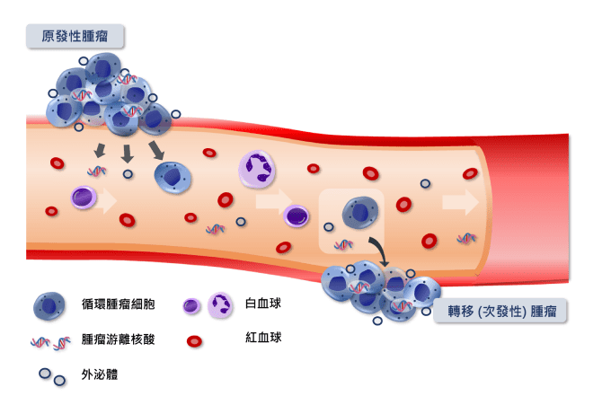
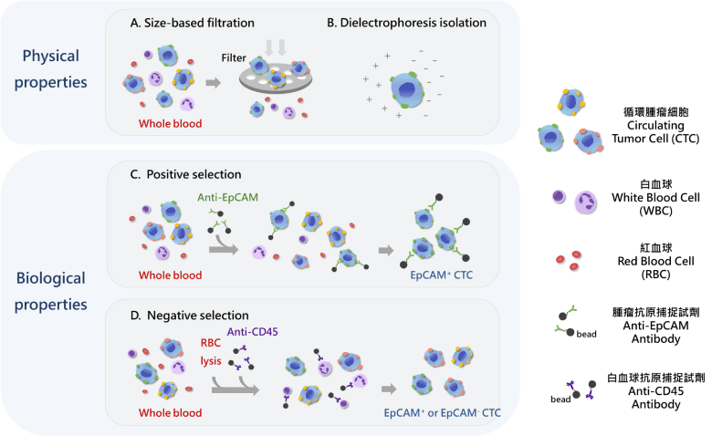

癌症已多年蟬聯國人十大死亡原因的首位。癌症一般是依照癌細胞起源於哪一種器官來命名。例如，從肺細胞產生的癌症就稱為肺癌，從肝細胞產生的癌症就稱為肝癌，從血液細胞產生的癌症就稱為血癌。國人的十大致死癌症有一個共同的特徵，就是這些癌細胞主要是來自於各個器官一種稱為上皮細胞的病變所產生。

圖一、國人十大致死癌症排名。(資料來源：衛福部107年國人死因統計結果)
癌症之所以可怕是因為這些上皮細胞病變所產生的癌細胞可以轉移到其他器官，影響身體的功能而造成死亡。醫學研究已經證實，只要體內有癌細胞存在，就有機會產生轉移的情形。每公克癌細胞每天會釋放100萬個新鮮的癌細胞到鄰近血管中，隨著血液全身循環。這些進入血液循環的癌細胞即稱為「循環腫瘤細胞」。有些血液中的癌細胞會蠢蠢欲動，伺機進入組織中增生，產生癌症轉移的情形。當癌症被發現的時候，通常已經進入轉移的階段。即使治療部位的癌症已經治癒，轉移出去的癌細胞仍有可能繼續分裂、累積，導致癌症復發，是病患與醫師很大的挑戰。

圖二、癌細胞轉移至遠處器官的過程。癌細胞從原發性腫瘤組織中剝離，穿透血管壁後進入血液循環中形成循環腫瘤細胞，在循環系統中，癌細胞可再度穿透血管壁進入特定遠端組織形成遠端轉移或次發性的腫瘤。在這過程中，癌細胞同時會釋放游離核酸及外泌體等。這些在血液中可被偵測到的細胞或細胞成份皆可用來做為檢測癌症的生物材料，統稱為液態切片。
如果能在癌症發生轉移前偵測到癌細胞的存在，醫師就可以用手術做局部性處理，清除癌細胞，減少轉移跟復發的機率。藉由瞭解癌細胞在身體內的數量也可以追蹤病患治療的效果及復發的狀況。檢測癌細胞有沒有存在的技術因此特別重要。目前核磁共振及電腦斷層等影像技術可以讓直徑大於 0.5公分的癌症無所遁形，卻存在一定程度的誤差；太小的癌症仍需要靠其他更靈敏的檢測技術來協助。近幾年液態切片檢測技術發展非常快速。液態切片檢測，簡單來說，就是從病患的血液以非侵入的技術，檢測有沒有癌細胞（循環腫瘤細胞）或源自癌細胞的核酸成份（循環腫瘤 DNA 或 RNA）及癌細胞分泌出來的外泌體，以瞭解受試者的狀況。這些檢測方法各有其優勢，但檢測血液中有沒有循環腫瘤細胞可以提供「眼見為憑」最直接的證據。
循環腫瘤細胞檢測是一個高技術門檻的檢驗方法。簡單來說，包括富集及免疫螢光染色循環腫瘤細胞、螢光影像擷取、鑑定及計數循環腫瘤細胞。目前有多種富集循環腫瘤細胞的方法，例如根據腫瘤細胞的物理特性，以細胞的大小或帶電性來區分及富集腫瘤細胞。因為腫瘤細胞相當多樣性，這樣的方法往往會有漏網之魚，無法全面富集各種特性的腫瘤細胞。另外的做法是根據生物特性來富集循環腫瘤細胞。針對特定表現的蛋白來富集循環腫瘤細胞的方法稱為「正向篩選」的模式。這樣的做法只能分離有表現特定蛋白的循環腫瘤細胞，一樣會有漏網之魚的疑慮。相對的一種做法稱為「負向篩選」模式，基本上是將血液細胞去除，將所有的非血球細胞保留下來。相對來說，負向篩選比較能全面性地將各種類型的循環腫瘤細胞進行富集，進行後端的細胞與分子層次的分析。

圖三、循環腫瘤細胞的分離原理。由於血液循環腫瘤細胞與血球細胞具有不同的物理（例如細胞的大小及帶電性）與生物特性（例如表面抗原的表現），因此可用來開發不同的循環腫瘤細胞富集的方法。
不管使用哪一種方法進行循環腫瘤細胞的檢測，對受試者來說，只要抽取少量血液，且不需事先禁食，也完全不需擔心影像檢查可能會面臨的輻射線過度暴露或是顯影劑過敏的問題，算是相當便利的檢測方法。根據醫學研究，每毫升血液內的循環腫瘤細胞個數超過一定範圍，即可高度懷疑體內正有一個癌症在發展中。癌症轉移與治療預後也與循環腫瘤細胞的多寡有密切的關係。因此癌症病患、具癌症家族史者、工作或生活作息具罹癌高危險因子者（如抽菸、酗酒、壓力大、常熬夜、或長期油膩少蔬果的飲食等）、懷疑罹癌者（如近期內體重大幅下降、食慾不佳、或莫名疼痛久治不癒等）、及定期健康檢查民眾若能接受循環腫瘤細胞的檢測，將能大幅提升癌症篩檢的效果及癌症病患的治療與病情監控品質，使癌症不再是聞之色變的絕症。